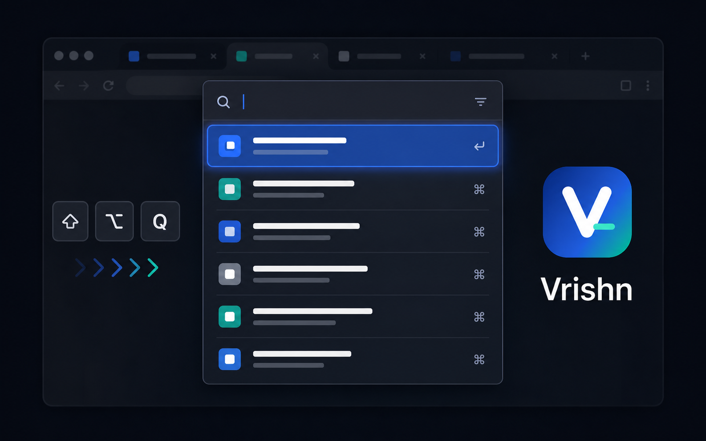

MRU first
Recently used tabs stay at the top, even after the MV3 service worker restarts.
Open source browser extension
Vrishn is a compact MRU popup for people who keep too many tabs open. Press a shortcut, tap Q to move, release the modifier to switch, or search by title and URL.

Features
Recently used tabs stay at the top, even after the MV3 service worker restarts.
Use the popup like an app switcher: hold the modifier, cycle, release.
Type parts of a title or URL. Multi-token fuzzy matching ranks the right tab higher.
Choose popup size, accent color, current-window-only mode, pinned tab visibility, and search restore.
Shortcuts
Open source